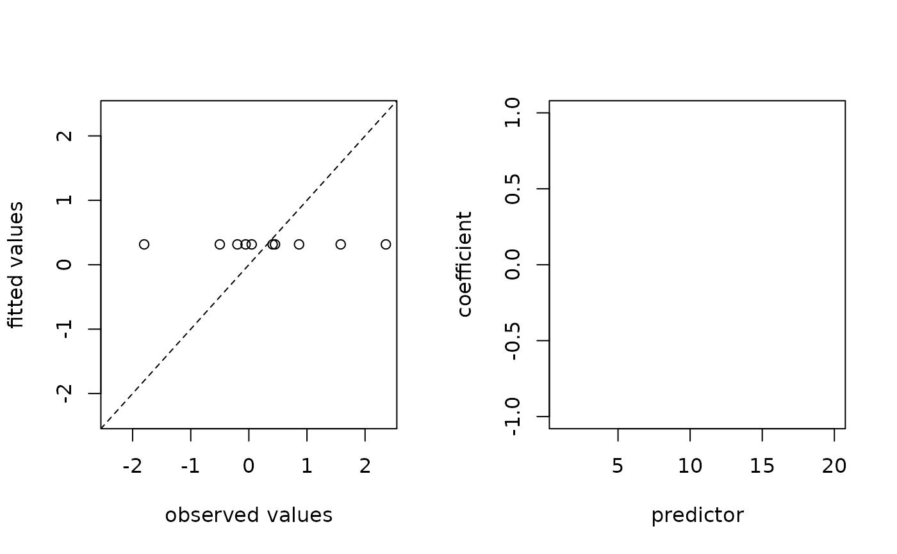

Lists implemented S3 methods for objects of class "cv.corila".
coef(): extract estimated coefficients
predict(): calculate predicted values
fitted(): extract fitted values
residuals(): calculate deviance residuals
plot(): visualise observed vs fitted values and estimated coefficients
print(): print information to the console
summary(): summarise the fitted model
Value
coef() returns a \((1 +) p\)-dimensional vector, predict() returns an \(n_1\)-dimensional vector, fitted() and residuals() return an \(n_0\)-dimensional vector. See individual methods for details.
See also
Use cv.corila() to fit the model.
Examples
# listing S3 methods
methods(class = "cv.corila")
#> [1] coef deviance fitted nobs plot predict print
#> [8] residuals summary
#> see '?methods' for accessing help and source code
# using S3 methods
n <- 10; p <- 20; q <- 5
x <- matrix(rnorm(n * p), nrow = n , ncol = p)
y <- rnorm(n)
group <- rep(seq_len(q), length.out = p)
primary <- as.logical(rbinom(n = p, size = 1, prob = 0.5))
object <- cv.corila(x = x, y = y, group = group, primary = primary)
#> Warning: Option grouped=FALSE enforced in cv.glmnet, since < 3 observations per fold
coef(object)
#> [1] 0.3156285 0.0000000 0.0000000 0.0000000 0.0000000 0.0000000 0.0000000
#> [8] 0.0000000 0.0000000 0.0000000 0.0000000 0.0000000 0.0000000 0.0000000
#> [15] 0.0000000 0.0000000 0.0000000 0.0000000 0.0000000 0.0000000 0.0000000
predict(object, newx = x)
#> [1] 0.3156285 0.3156285 0.3156285 0.3156285 0.3156285 0.3156285 0.3156285
#> [8] 0.3156285 0.3156285 0.3156285
fitted(object)
#> [1] 0.3156285 0.3156285 0.3156285 0.3156285 0.3156285 0.3156285 0.3156285
#> [8] 0.3156285 0.3156285 0.3156285
residuals(object)
#> [1] 1.26471634 0.54842700 -0.37158022 0.09390859 2.04230119 -0.81544995
#> [7] -0.51263457 -0.26691716 -2.11699746 0.13422623
plot(object)

print(object)
#> object of class ‘cv.corila’
#> (contains multiple objects of class ‘cv.glmnet’)
#> selected 0 from 20 predictors
summary(object)
#> --- object of class “cv.corila” ---
#> generalised linear model with gaussian family
#> 20 features (10 primary and 10 auxiliary features)
#> initial coefficients: ridge regression
#> final coefficients: adaptive lasso regression
#> optimised regularisation parameter: lambda.min = 1.188
#> selected weights: local = 0.9, global = 0.1
#> selected exponents: local = 0, global = 1
#> 1 non-zero coefficients (including intercept)